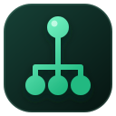

Ứng dụng & React
Đọc, ghi và đăng ký bằng API thống nhất.

BilaTreeGhi dữ liệu tại một nút. Lắng nghe thay đổi ở bất cứ đâu. Đồng bộ từ bộ nhớ, nhiều tab trình duyệt đến mạng Nostr bằng cùng một API nhỏ gọn.
npm install treelike
Mọi thay đổi bên dưới được lưu trên máy bạn. Mở trang trong hai tab để xem đồng bộ tức thời qua BroadcastChannel.
Nhấn “Ghi và phát thay đổi” để tạo nhánh đầu tiên.
Lõi Node chỉ quản lý đường dẫn, đăng ký và thứ tự thay đổi. Adapter quyết định dữ liệu sống ở đâu và di chuyển như thế nào.
Đọc, ghi và đăng ký bằng API thống nhất.
get · put · on · open
node.get('du-an/ten') trỏ đến đúng nhánh mà không cần schema nặng.
on(callback) trả dữ liệu hiện có rồi tiếp tục phát bản cập nhật mới.
Thay phương tiện lưu/truyền mà không viết lại component hay logic trạng thái.
Với Nostr, trạng thái công khai gắn với khóa tác giả và sự kiện đã ký.
import { localState } from 'treelike'; const trangThai = localState.get('du-an/bilatree'); // Lắng nghe dữ liệu hiện có và mọi thay đổi mới const huy = trangThai.on((giaTri) => { console.log('Dữ liệu mới:', giaTri); }); await trangThai.put({ tienDo: 82, sanSang: true }); // Dừng lắng nghe khi không còn sử dụng huy();import { useLocalState } from 'treelike-hooks'; export function HoSo() { const [ten, setTen] = useLocalState( 'nguoi-dung/ho-so/ten', 'Chưa đặt tên' ); return <input value={ten} onChange={e => setTen(e.target.value)} />; }import { publicState } from 'treelike-nostr'; // publish/subscribe được cung cấp bởi lớp tích hợp NDK const state = publicState(publish, subscribe, [npub]); state.get('apps/tai-lieu/tieu-de').on(console.log); await state .get('apps/tai-lieu/tieu-de') .put('Tài liệu cộng tác');
Node, kiểu dữ liệu và adapter cục bộ.
ĐỒNG BỘTrạng thái công khai qua NDK/Nostr.
GIAO DIỆNHooks khai báo cho ứng dụng React.
Bắt đầu từ API nhỏ, thêm đúng adapter khi phạm vi đồng bộ lớn dần.